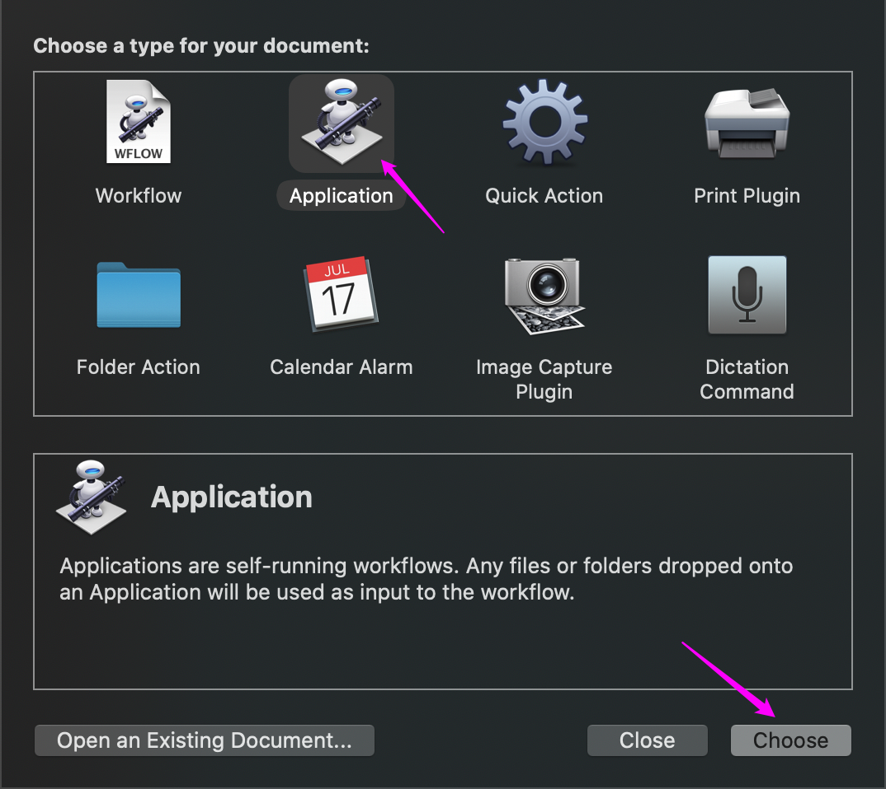
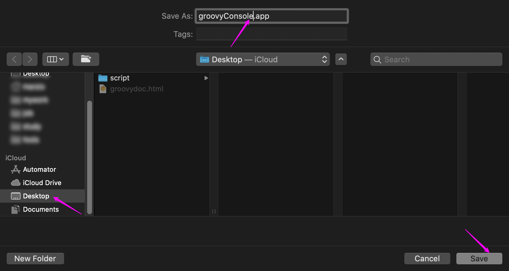
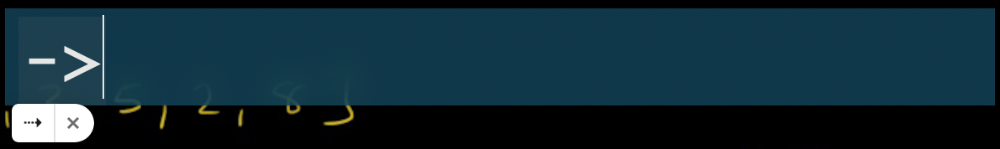
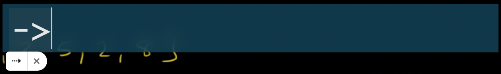
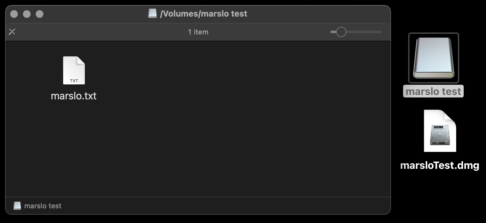

Table of Contents generated with DocToc
copy path
copy STDOUT into clipboard
[!NOTE]
pbcopyfor macOSxclipfor Linux
$ <cmd> | pbcopy
- example
$ cat file | pbcopy $ pwd | pbcopy
Copy path from finder

- Automator -> Quick Action


-
on run {input, parameters} try tell application "Finder" to set the clipboard to POSIX path of (target of window 1 as alias) on error beep end try return input end run


create an app for script
case: run
groovyConsolefrom Spolite or Alfred reference: Install groovy console on Mac and make it runnable from dock
get standalone commands for the script
$ ps aux | grep groovyConsole | grep -v grep
marslo 50495 0.0 3.4 11683536 577828 ?? S 5:50PM 0:15.85 /Library/Java/JavaVirtualMachines/jdk1.8.0_211.jdk/Contents/Home/bin/java -Xdock:name=GroovyConsole -Xdock:icon=/usr/local/opt/groovy/libexec/lib/groovy.icns -Dgroovy.jaxb=jaxb -classpath /usr/local/opt/groovy/libexec/lib/groovy-3.0.6.jar -Dscript.name=/usr/local/opt/groovy/libexec/bin/groovyConsole -Dprogram.name=groovyConsole -Dgroovy.starter.conf=/usr/local/opt/groovy/libexec/conf/groovy-starter.conf -Dgroovy.home=/usr/local/opt/groovy/libexec -Dtools.jar=/Library/Java/JavaVirtualMachines/jdk1.8.0_211.jdk/Contents/Home/lib/tools.jar org.codehaus.groovy.tools.GroovyStarter --main groovy.console.ui.Console --conf /usr/local/opt/groovy/libexec/conf/groovy-starter.conf --classpath .:/Library/Java/JavaVirtualMachines/jdk1.8.0_211.jdk/Contents/Home/lib/tools.jar:/Library/Java/JavaVirtualMachines/jdk1.8.0_211.jdk/Contents/Home/lib/dt.jar:/usr/local/opt/groovy/libexec/lib:.
==> which would be:
/Library/Java/JavaVirtualMachines/jdk1.8.0_211.jdk/Contents/Home/bin/java \
-Xdock:name=GroovyConsole \
-Xdock:icon=/usr/local/opt/groovy/libexec/lib/groovy.icns \
-Dgroovy.jaxb=jaxb \
-classpath /usr/local/opt/groovy/libexec/lib/groovy-3.0.6.jar \
-Dscript.name=/usr/local/opt/groovy/libexec/bin/groovyConsole \
-Dprogram.name=groovyConsole \
-Dgroovy.starter.conf=/usr/local/opt/groovy/libexec/conf/groovy-starter.conf \
-Dgroovy.home=/usr/local/opt/groovy/libexec \
-Dtools.jar=/Library/Java/JavaVirtualMachines/jdk1.8.0_211.jdk/Contents/Home/lib/tools.jar org.codehaus.groovy.tools.GroovyStarter \
--main groovy.console.ui.Console \
--conf /usr/local/opt/groovy/libexec/conf/groovy-starter.conf \
--classpath .:/Library/Java/JavaVirtualMachines/jdk1.8.0_211.jdk/Contents/Home/lib/tools.jar:/Library/Java/JavaVirtualMachines/jdk1.8.0_211.jdk/Contents/Home/lib/dt.jar:/usr/local/opt/groovy/libexec/lib:.
using Automator.app to create an app
- Open Automator.app » New » Application 
Select Run Shell Script » save to
.app with empty shell script 
 1.8.6.6 -- Automator.app » save to an app
edit Contents/Info.plist
$ vim groovyConsole.app/Contents/Info.plist
...
<key>CFBundleExecutable</key>
<string>gConsole</string> « the script name, can be any name you want
<key>CFBundleIconFile</key>
<string>groovy</string>
<key>CFBundleIdentifier</key>
<string>com.apple.groovyConsole</string>
...
- original
<key>CFBundleExecutable</key> <string>Application Stub</string> <key>CFBundleIconFile</key> <string>AutomatorApplet</string> <key>CFBundleIdentifier</key> <string>com.apple.automator.groovyConsole</string>
create script to open the groovyConsole
$ touch groovyConsole.app/Contents/MacOS/groovyConsole
$ cat > groovyConsole.app/Contents/MacOS/groovyConsole << EOF
-> #!/bin/bash
-> /Library/Java/JavaVirtualMachines/jdk1.8.0_211.jdk/Contents/Home/bin/java \\
-> -Xdock:name=GroovyConsole \\
-> -Xdock:icon=/usr/local/opt/groovy/libexec/lib/groovy.icns \\
-> -Dgroovy.jaxb=jaxb \\
-> -classpath /usr/local/opt/groovy/libexec/lib/groovy-3.0.6.jar \\
-> -Dscript.name=/usr/local/opt/groovy/libexec/bin/groovyConsole \\
-> -Dprogram.name=groovyConsole \\
-> -Dgroovy.starter.conf=/usr/local/opt/groovy/libexec/conf/groovy-starter.conf \\
-> -Dgroovy.home=/usr/local/opt/groovy/libexec \\
-> -Dtools.jar=/Library/Java/JavaVirtualMachines/jdk1.8.0_211.jdk/Contents/Home/lib/tools.jar org.codehaus.groovy.tools.GroovyStarter \\
-> --main groovy.console.ui.Console \\
-> --conf /usr/local/opt/groovy/libexec/conf/groovy-starter.conf \\
-> --classpath .:/Library/Java/JavaVirtualMachines/jdk1.8.0_211.jdk/Contents/Home/lib/tools.jar:/Library/Java/JavaVirtualMachines/jdk1.8.0_211.jdk/Contents/Home/lib/dt.jar:/usr/local/opt/groovy/libexec/lib:.
-> EOF
$ chmod +x groovyConsole.app/Contents/MacOS/groovyConsole
- try validate via execute
groovyConsole.app/Contents/MacOS/groovyConsoledirectly. to see whether if the groovyConsole will be opened.
set the icon for new app
optional
$ cp /usr/local/opt/groovy/libexec/lib/groovy.icns groovyConsole.app/Contents/Resources
- or
$ ln -sf /usr/local/opt/groovy/libexec/lib/groovy.icns groovyConsole.app/Contents/Resources/groovy.icns
move groovyConsole.app to /Application
$ mv groovyConsole.app/ /Applications/
add snippets for input
enable Technical Symbols
Input Method ⇢ Show emoji and symbols

Open Customized List ⇢ Technical Symbols


1.8.6.7 -- technical symbols
And snippets
- go to System Preferences ⇢ Keyboard ⇢ Test
- Add snippets as below

finally
 

others
shutdown mac via commands
$ osascript -e 'tell app 'loginwindow' to «event aevtrsdn»'
turn off the screen without sleeping
$ pmset displaysleepnow
sleep
$ pmset sleepnowlock
$ pmset lock
launch apps
$ launchctl list
extra pkg
$ xar -xvf foo.pkg
create image
- create dmg image
$ hdiutil create -volname "Volume Name" \ -srcfolder /path/to/folder \ -ov diskimage.dmg create encrypted image
$ hdiutil create -encryption \ -stdinpass \ -volname "Volume Name" \ -srcfolder /path/to/folder \ -ov encrypted.dmgcreaste dvd (for .iso, .img, .dmg)
$ hdiutil burn /path/to/image_file
create disk image from volume
$ sudo hdiutil create ~/Desktop/<name>.dmg -srcdevice /dev/<disk-identifier>
- i.e.:
$ sudo hdiutil create ~/Desktop/Lion.dmg -srcdevice /dev/disk2s4
create disk image from a folder
$ hdiutil create <imagename>.dmg -volname "<name of volume>" -srcfolder /path/to/folder'
i.e.:
$ hdiutil create ~/Desktop/marsloTest.dmg -volname 'marslo test' -srcfolder ~/Desktop/marsloTest/ created: /Users/marslo/Desktop/marsloTest.dmg 1.8.6.8 -- hdiutil create image setup read & write dmg
$ hdiutil create ~/Desktop/mTest.dmg \ -volname "Marslo Test" \ -srcfolder ~/Desktop/mTest \ -size 1g \ -format UDRW
create encrypted disk image
$ hdiutil create mEncrypted.dmg \
-encryption \
-size 1g \
-volname "mEncrypted Disk Image" \
-fs JHFS+ \
-srcfolder /path/to/folder \
Enter a new password to secure "mEncrypted.dmg":
Re-enter new password:
....
created: /Users/marslo/Desktop/mEncrypted.dmg

resize the disk image
$ hdiutil resize -size <new size> <imagename>.dmg
- i.e.:
$ hdiutil resize -size 2g mEncrypted.dmg
restore disk images
$ sudo asr restore --source <disk image>.dmg --target /Volumes/<volume name>
disk
check volumn info
$ diskutil info <path/to/volumn>
i.e.:
$ diskutil info /Volumes/iMarsloOSX/ Device Identifier: disk1s5 Device Node: /dev/disk1s5 Whole: No Part of Whole: disk1 Volume Name: iMarsloOSX Mounted: Yes Mount Point: /list disks and volumns
$ diskutil listor
$ diskutil list disk1or lsblk
$ docker run cmd.cat/lsblk lsblk NAME MAJ:MIN RM SIZE RO TYPE MOUNTPOINT vda 254:0 0 16G 0 disk └─vda1 254:1 0 16G 0 part /etc/hostsor lshw
$ docker run cmd.cat/lshw lshw -class disk *-virtio1 description: Virtual I/O device physical id: 0 bus info: virtio@1 logical name: vda configuration: driver=virtio_blk
list the apfs info
$ diskutil apfs list
APFS Container (1 found)
|
+-- Container disk1 ********-****-****-****-************
====================================================
APFS Container Reference: disk1
Size (Capacity Ceiling): 250685575168 B (250.7 GB)
Capacity In Use By Volumes: 176258826240 B (176.3 GB) (70.3% used)
Capacity Not Allocated: 74426748928 B (74.4 GB) (29.7% free)
|
+-< Physical Store...>
|
+-> ...
check detail diskage usage
$ sudo fs_usage
21:03:47 ioctl 0.000003 iTerm2
21:03:47 ioctl 0.000003 iTerm2
21:03:47 close 0.000031 privoxy
21:03:47 select 0.000004 privoxy
...
erase disk
| File System | Abbreviation |
|---|---|
| Mac OS Extended (Journaled) | JHFS+ |
| Mac OS Extended | HFS+ |
| MS-DOS fat32 | FAT32 |
| ExFAT | ExFAT |
$ diskutil listFilesystems
...
-------------------------------------------------------------------------------
PERSONALITY USER VISIBLE NAME
-------------------------------------------------------------------------------
Case-sensitive APFS APFS (Case-sensitive)
(or) APFSX
APFS APFS
(or) APFSI
ExFAT ExFAT
Free Space Free Space
(or) FREE
MS-DOS MS-DOS (FAT)
MS-DOS FAT12 MS-DOS (FAT12)
MS-DOS FAT16 MS-DOS (FAT16)
MS-DOS FAT32 MS-DOS (FAT32)
(or) FAT32
HFS+ Mac OS Extended
Case-sensitive HFS+ Mac OS Extended (Case-sensitive)
(or) HFSX
Case-sensitive Journaled HFS+ Mac OS Extended (Case-sensitive, Journaled)
(or) JHFSX
Journaled HFS+ Mac OS Extended (Journaled)
(or) JHFS+
UFSD_NTFS Microsoft NTFS
ExFAT
$ diskutil eraseDisk ExFAT iMarsloUSB /dev/disk2 Started erase on disk2 Unmounting disk Creating the partition map Waiting for partitions to activate Formatting disk2s2 as ExFAT with name iMarsloUSB Volume name : iMarsloUSB Partition offset : 411648 sectors (210763776 bytes) Volume size : 246534144 sectors (126225481728 bytes) Bytes per sector : 512 Bytes per cluster: 131072 FAT offset : 2048 sectors (1048576 bytes) # FAT sectors : 8192 Number of FATs : 1 Cluster offset : 10240 sectors (5242880 bytes) # Clusters : 962984 Volume Serial # : 5ff81490 Bitmap start : 2 Bitmap file size : 120373 Upcase start : 3 Upcase file size : 5836 Root start : 4 Mounting disk Finished erase on disk2check
$ diskutil info disk2s1 Device Identifier: disk2s1 Device Node: /dev/disk2s1 Whole: No Part of Whole: disk2 Volume Name: EFI Mounted: No Partition Type: EFI File System Personality: MS-DOS FAT32 Type (Bundle): msdos Name (User Visible): MS-DOS (FAT32) ... ... $ diskutil info disk2s2 Device Identifier: disk2s2 Device Node: /dev/disk2s2 Whole: No Part of Whole: disk2 Volume Name: iMarsloUSB Mounted: Yes Mount Point: /Volumes/iMarsloUSB Partition Type: Microsoft Basic Data File System Personality: ExFAT Type (Bundle): exfat Name (User Visible): ExFAT ... ...
Verifying and Repairing Volumes
$ diskutil verifyVolume /Volumes/<volume name>
$ diskutil repairVolume /Volumes/<volume name>
rename volume
$ diskutil rename "<current name of volume>" "<new name>"
Partitioning a Disk
reference:
GPT: GUID Partition TableAPM: Apple Partition MapMBR: Master Boot Records
$ diskutil partitionDisk /dev/disk2 GPT JHFS+ New 0b
- multiple partitions
$ diskutil partitionDisk /dev/disk2 GPT \ JHFS+ First 10g \ JHFS+ Second 10g \ JHFS+ Third 10g \ JHFS+ Fourth 10g \ JHFS+ Fifth 0b Splitting Partitions
$ diskutil splitPartition /dev/disk2s6 \ JHFS+ Test 10GB \ JHFS+ Test2 0bMerging Partitions
$ diskutil mergePartitions \ JHFS+ \ NewName \ <first disk identifier in range> \ <last disk identifier in range>i.e.:
$ diskutil mergePartitions JHFS+ NewName disk2s4 disk2s6
check usb
$ system_profiler SPUSBDataType
- or get xml format
$ system_profiler -xml SPUSBDataType - or
$ ioreg -p IOUSB - or
$ ioreg -p IOUSB -w0 -l- or get device name
$ ioreg -p IOUSB -w0 | sed 's/[^o]*o //; s/@.*$//' | grep -v '^Root.*'
- or get device name
disable startup music
$ sudo nvram SystemAudioVolume=" "
3D lock screen
$ /System/Library/CoreServices/Menu\ Extras/User.menu/Contents/Resources/CGSession -suspend
take screenshot after 3 sec
$ screencapture -T 3 -t jpg -P delayedpic.jpg
setup welcome text in login screen
$ sudo defaults write /Library/Preferences/com.apple.loginwindow LoginwindowText 'Awesome Marslo!!'
show message on desktop
$ sudo jamf displayMessage -message "Hello World!"
modify font in plist
original
$ defaults read ~/Library/Preferences/groovy.console.ui.plist { "/groovy/console/ui/" = { autoClearOutput = true; compilerPhase = 4; currentFileChooserDir = "/Users/marslo/Desktop"; decompiledFontSize = 12; fontSize = 18; frameHeight = 600; frameWidth = 800; frameX = 198; frameY = 201; horizontalSplitterLocation = 100; inputAreaHeight = 576; inputAreaWidth = 1622; outputAreaHeight = 354; outputAreaWidth = 1676; showClosureClasses = false; showIndyBytecode = false; showScriptClass = true; showScriptFreeForm = false; showScriptInOutput = false; showTreeView = true; threadInterrupt = true; verticalSplitterLocation = 100; }; }- or
$ /usr/libexec/PlistBuddy -c 'print ":/groovy/console/ui/:fontSize"' ~/Library/Preferences/groovy.console.ui.plist 18
- or
- change
$ /usr/libexec/PlistBuddy -c 'Set ":/groovy/console/ui/:fontSize" 24' ~/Library/Preferences/groovy.console.ui.plist $ /usr/libexec/PlistBuddy -c 'Print ":/groovy/console/ui/:fontSize"' ~/Library/Preferences/groovy.console.ui.plist 24
show process details